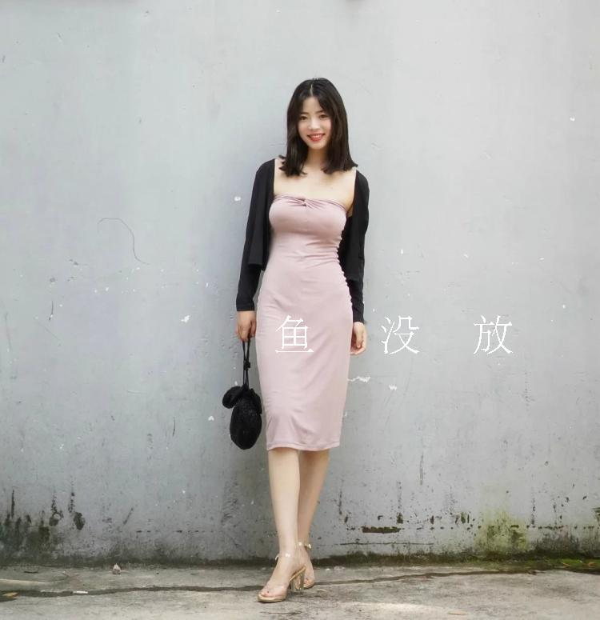
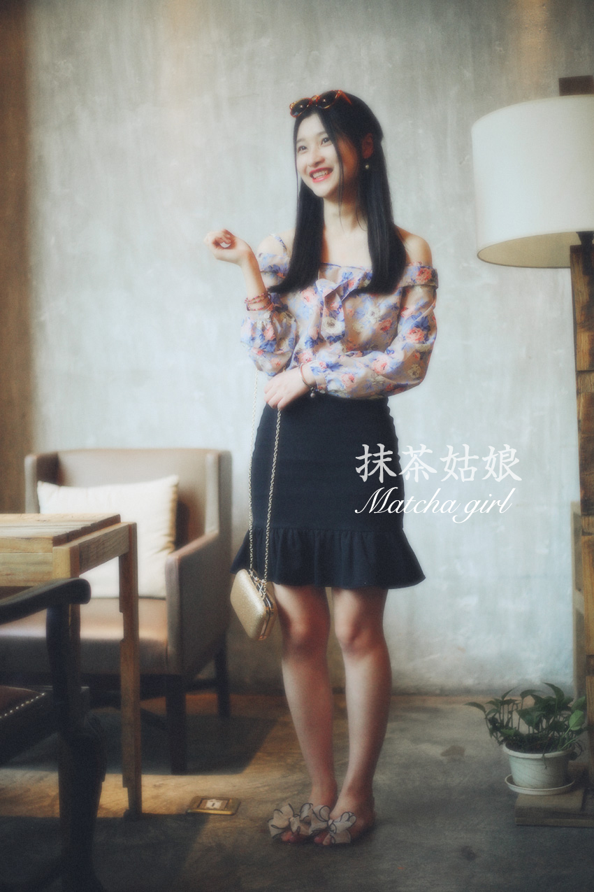
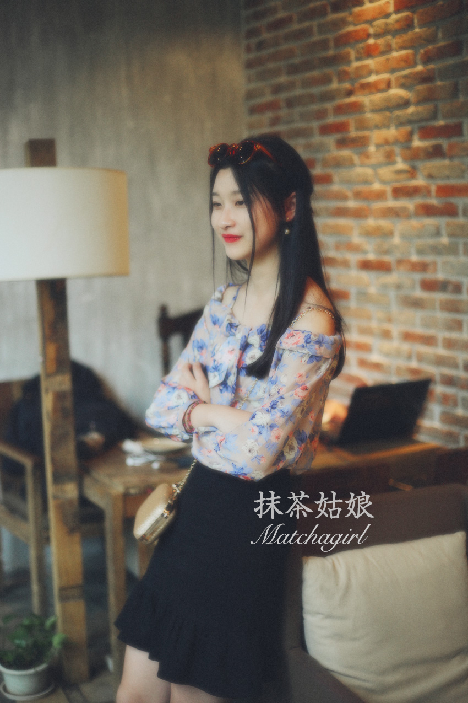
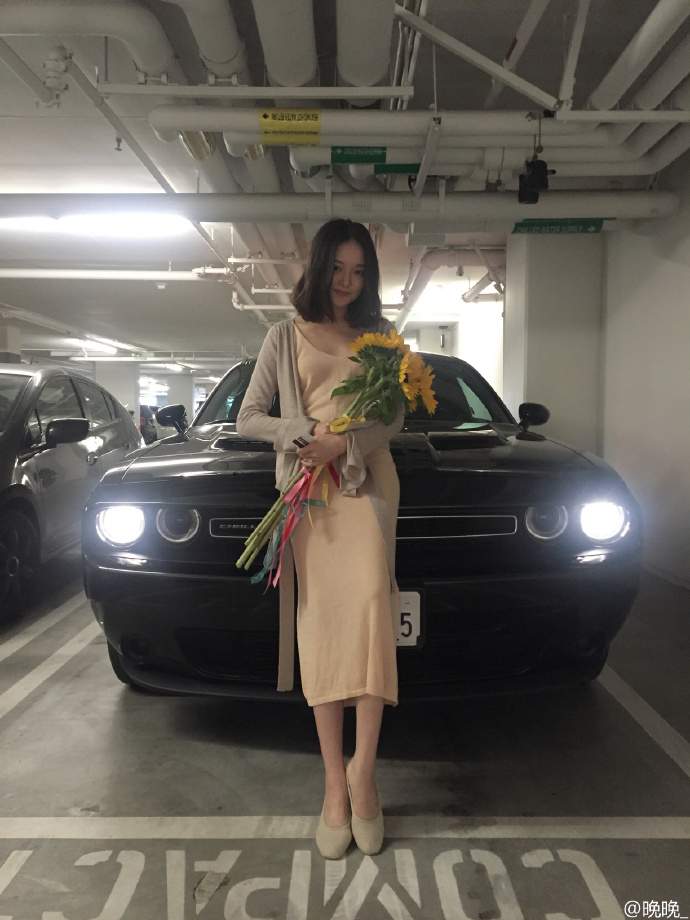
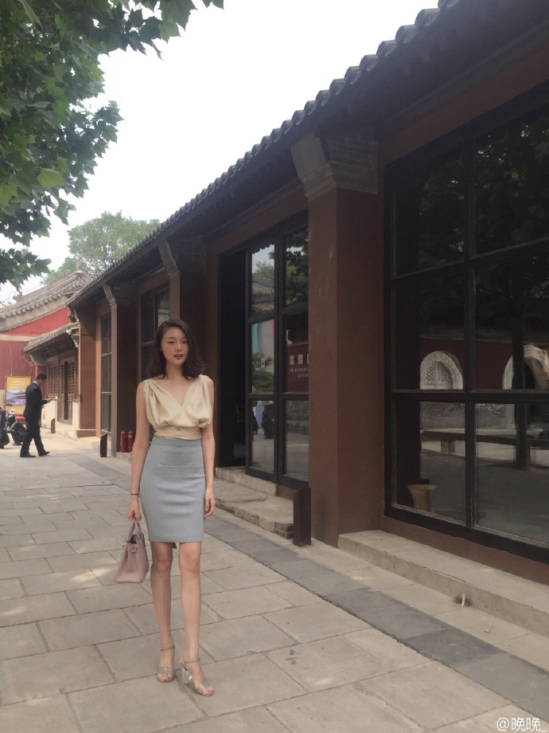
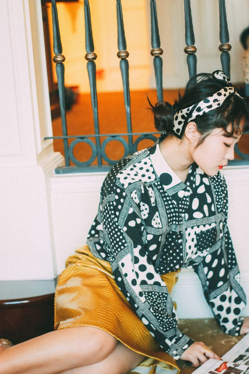
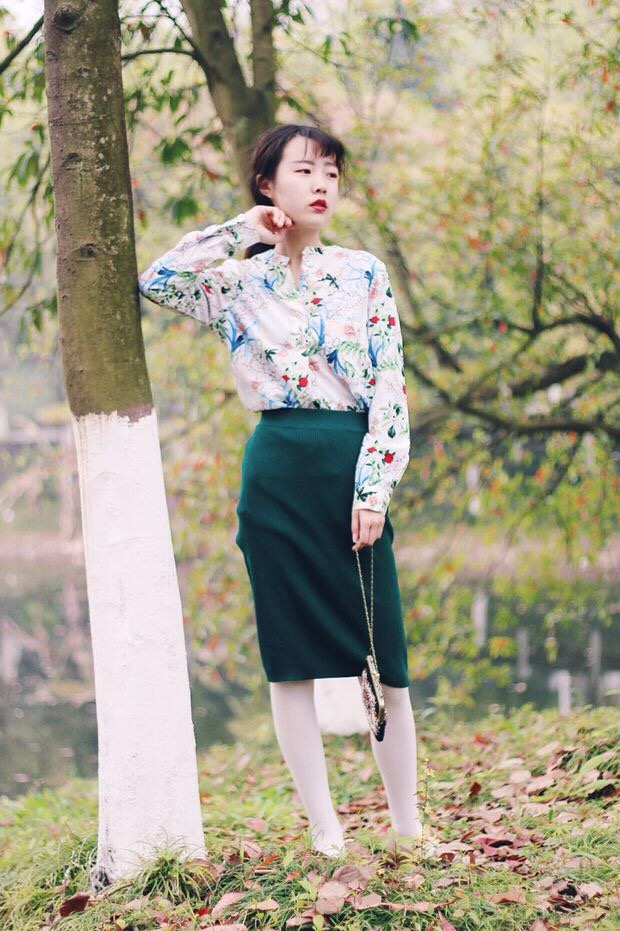
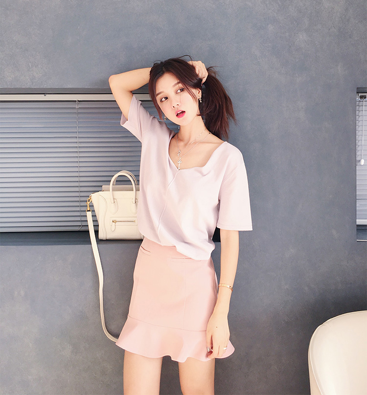
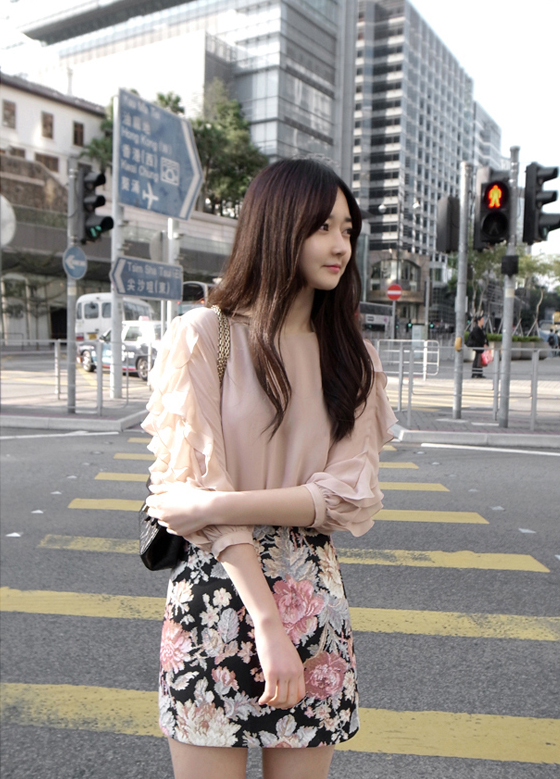
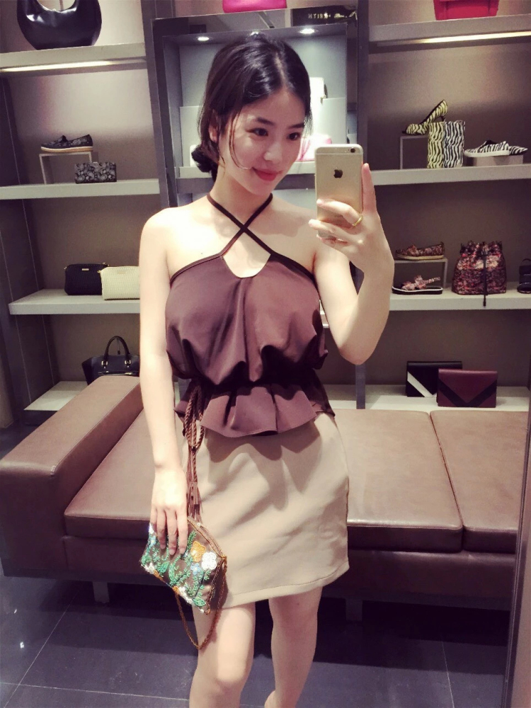

正文:
这个话题放着我来！！！
包臀裙是一种神奇的存在，我都想给她颁布一个上世纪最佳单品发明奖！
感觉她扭转了我的穿衣世界观，竟然有一种东西能几乎满足所有人的身材。不管高的、矮的、胖的、瘦的、腿粗、腿细的，包臀裙都能帮你打开一扇新的大门。
之前看过一个类似的问题，问女生为什么要穿包臀裙？
答曰，人丑以及胸小，只要用包臀裙弥补这两个缺陷。的确如此！包臀裙是弥补身材的好帮手。
曾经年幼无知的我认为，包臀裙过于刻意强调女性曲线，世俗味、庸俗气味过重，一直保持拒绝态度，
后来学会搭配后，你发现你能够轻松玩转包臀裙。为你想要塑造的气质服务，不管是性感、温婉还是清纯的感觉。
- 对于身材本身性感、尤其是屁股翘的女生，包臀裙自然能够包裹住你的臀部，发挥你的身材优势。这类代表有很多欧美女星以及网红“鱼没放”。

- 对于身材干瘦、没有曲线的女生，是不是就要放弃包臀裙了呢？恰恰相反，弹性较好、密度较高的包臀裙能够帮你“伪造”曲线！
如图所示是我的一位168，90斤的朋友，算是非常干瘦了，完全没有肉。
但是穿上包臀裙，也凹凸有致了，而且少了些魅惑，多了份婉约。
(利益相关，衣服是我设计哒。。。害羞脸）

豆瓣女神“晚晚”也是此类干瘦型，却把鱼尾裙驾驭得很好的代表。

- 身材比较丰满、微胖的女生，能不能穿包臀裙呢?回答是：如鱼得水！如果腿粗的女生，穿蓬蓬裙或者伞裙会继续放大缺点，穿深色包臀裙可以很好地掩盖缺点。
如图所示是我很喜欢的一个麻豆，身材微微丰满，能够把包臀裙穿得十分传神。
然后推荐微胖的妹子可以穿这种皮质稍微挺括的包臀裙。

讲了辣么多好，那么该如何搭配包臀裙呢！



先酱紫，谢谢观看！